文字
文字積木除了可以顯示有意義的詞彙，也可以透過相加的方式把文字組合，或是在一段詞彙中尋找對應的字詞或字母，甚至也可顯示語音辨識的內容或物聯網串感器的狀態。
指定文字 ( 英文、數字 )
「指定文字」積木可以輸入指定的英文數字，透過 LCD 螢幕顯示出來。
如下方程式，螢幕顯示「Web:AI」。
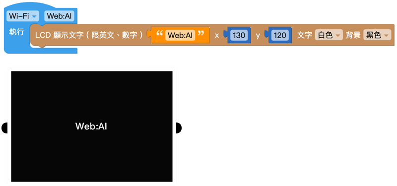
字串組合
「字串組合」積木可以把不同的文字積木組合成一段文字。 點擊紫色的「設定」按鈕，將「項目」積木加入字串組合中，可以增加文字的數量。
範例：顯示 3 個字串
在「字串組合」積木中放入 3 個文字積木，輸入 A、B、C，按下執行，可以看到 Web:AI 螢幕畫面顯示「ABC」。
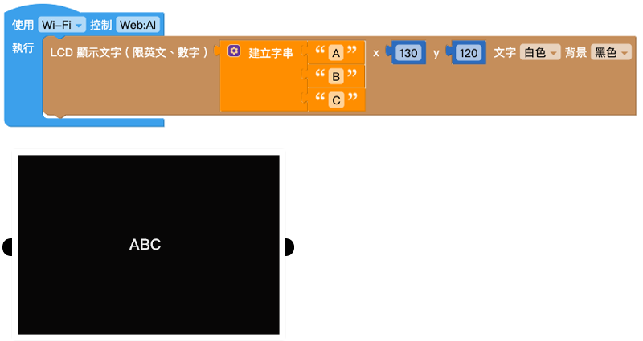
在變數後方加入文字
「在變數後加入文字」積木能夠在原本變數的內容後方增加額外文字。
範例：在科目名稱後面顯示成績
- 設定「變數 score」，後方用「文字」積木放入科目名稱「Math:」
- 使用「在變數後加入文字」積木對「變數 score」加入科目分數「95」
- 按下執行，就可以看到 Web:AI 螢幕顯示「Math:95」
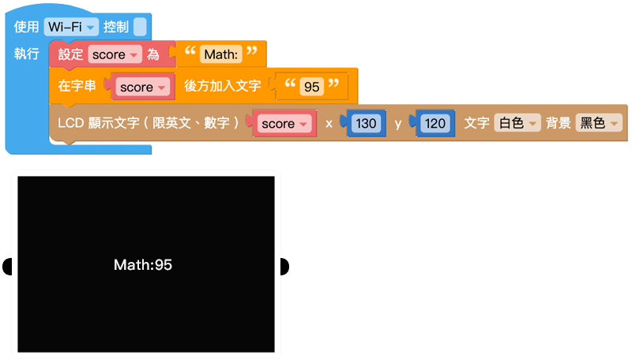
文字長度
「文字長度」積木可以取得一串文字的總字數。
英文字以「字母」為單位，且空白、標點符號也算是一個字元。
範例：算出有多少字元
- 設定「變數 length」，複製一串英文字母或文章貼上
- 使用「LCD 顯示文字」積木顯示「變數 length」
- 按下執行，就可以看到全部的字元數量，如英文字母有 26 個。
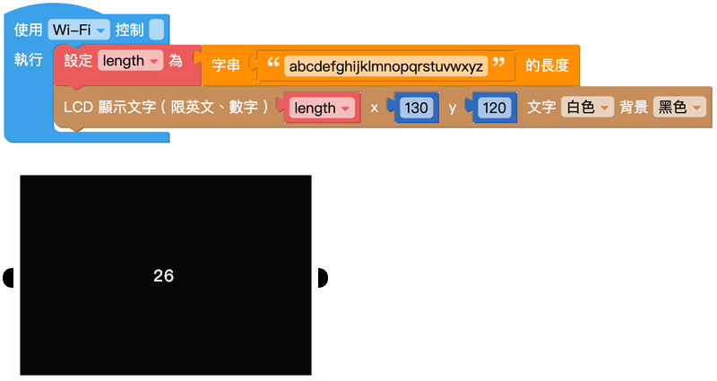
文字為空
「文字為空」積木可以判斷積木內是否存在文字，若不存在文字，回傳「是 ( true )」，並執行後續動作。
範例：是否存在文字
- 使用邏輯積木，判斷是否存在文字
- 如果文字為空，執行 LCD 螢幕顯示「T」；如果存在文字，LCD 螢幕顯示「N」
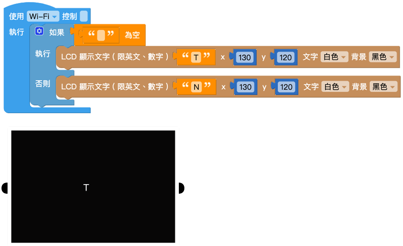
尋找文字出現位置
「尋找字串出現位置」積木會回傳指定文字在一段文字中出現的位置，可以選擇第一個出現的位置或最後一個出現的位置。
範例：找出 W 是第幾個字母？
- 設定「變數」積木為字串 A~Z
- 設定「變數 W」並放入「尋找字串出現位置」積木
- 使用「LCD 顯示」積木顯示「變數 W」
- 按下執行，可以看到 W 是第 23 個英文字母
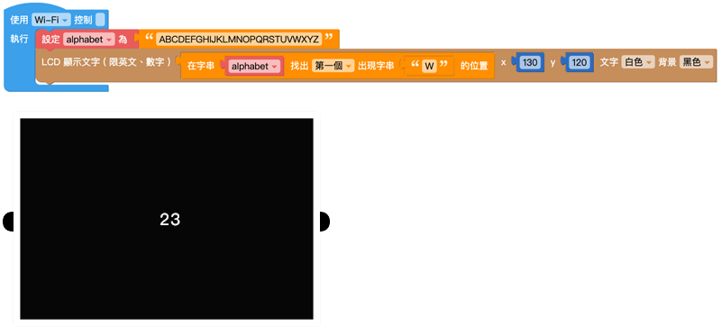
取得指定位置的文元
「取得指定位置的文元」積木會取出指定位置的文元，下拉選單共有五種指定位置，分別是第幾個、倒數第幾個、第一個、最後一個和隨機位置。
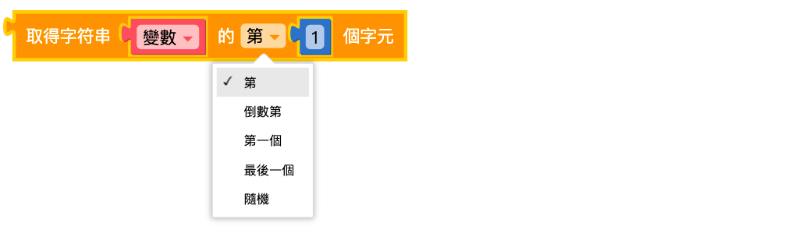
範例：尋找第 23 個英文字母
延續上面範例，找出第 23 英文字母，並用螢幕顯示出來。
- 設定「變數」積木為字串 A~Z
- 設定「變數 23」並放入「取得指定位置的文元」積木
- 使用「LCD 顯示」積木顯示「變數 23」
- 按下執行，可以看到第 23 個英文字母是 W
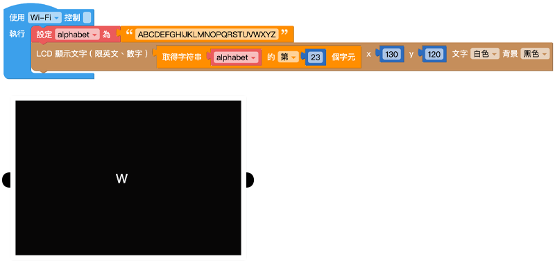
取得指定區間的文字
「取得指定區間的文字」積木會取出一段指定區間內的文字，需注意的是第一個空格的數字要比第二個空格內的數字小。
範例：在句子中找出指定區間的字元
- 使用「變數」積木和「文字」積木，並輸入一段句子 Let's try Web:AI!
- 設定取得第 10 字元 ~ 倒數第 2 字元
- 執行後可以看到 LCD 螢幕顯示 Web:AI!
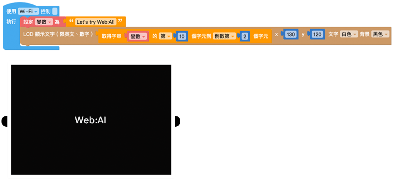
轉換大小寫
「轉換大小寫」積木可以針對「英文字」進行大小寫轉換，包含全部轉大寫、全部轉小寫或是首字母大寫。
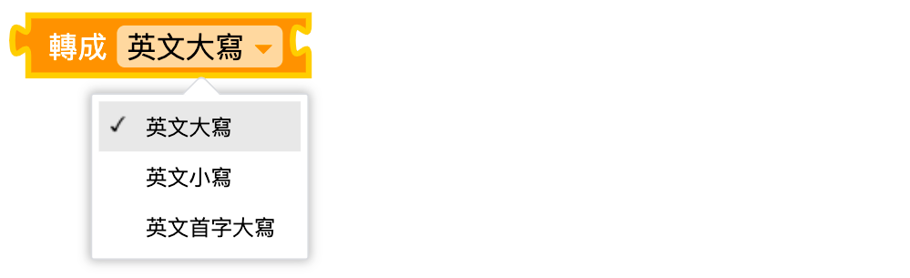
範例：讓英文字不斷變換大小寫
- 使用 2 個「LCD 顯示文字」積木，裡面分別放入「轉成英文大寫」積木及「轉成英文小寫」積木
- 在「轉換大小寫」積木內輸入英文字
- 使用「重複無限次」積木，並用「等待」積木設定間隔時間各 1 秒
- 按下執行，可以在 Web:AI 螢幕看到 ABCDEFG 不斷變換大小寫
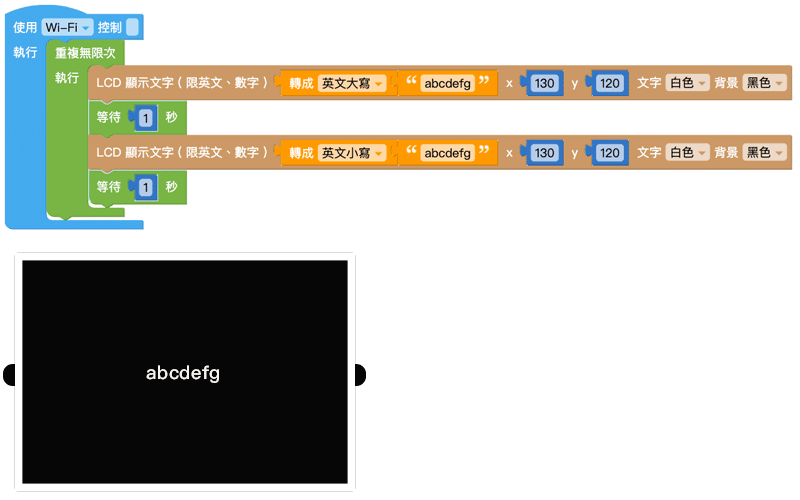
消除空格
「消除空格」積木可以消除一段文字中左邊、右邊或左右兩邊的空白字元。
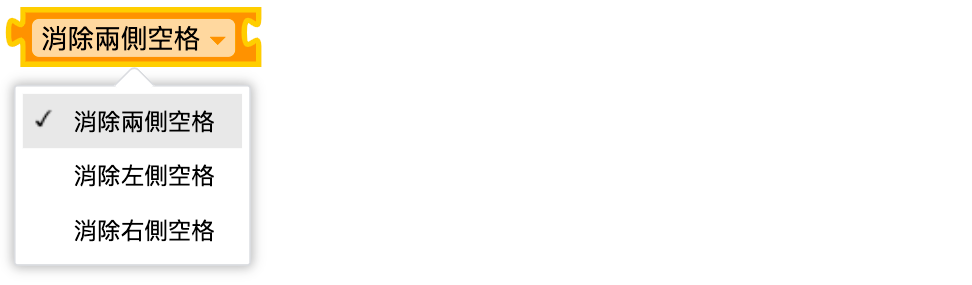